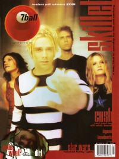
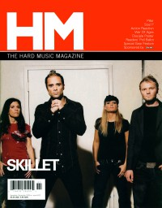
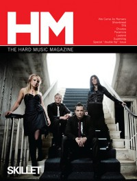
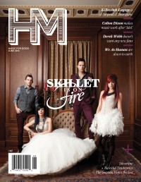
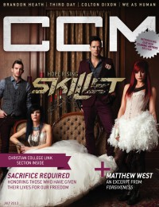
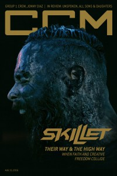

Skillet
|  |
| March 2001 7ball |
 |
| 2005 Christian Guitarist & Bassist |
 |
| November 2006 HM |
 |
| September 2009 HM |
 |
| June 2013 HM |
 |
| July 2013 CCM Digital |
 |
| 15 August 2016 CCM Digital |
Media coverage:
- Nov 1996 in 7ball "Skillet", by Mike Parker
- Nov 1996 in HM "Skillet", by Brian Vincent McGovern
- Dec 1996 in CCM "Faces to Watch: Iron On Fire", by Dave Urbanski
- Jan 1997 in Campus Life "Tell Me About It: Skillet"
- Jul 1998 in 7ball "Surf's Up", by Dan MacIntosh
- Jul 1998 in HM "Skillet", by Val Sutton
- Sep 1998 in 7ball "Bankshots: Skillet", by Dan MacIntosh
- Jan 2000 in HM "Still Standing", by Cynthia Moe
- Jan 2000 in 7ball "Iron Skillet", by Rachel L Martin
- May 2000 in CCM "Rock Flavor", by Brian Quincy Newcomb
- Mar 2001 in 7ball "If You Can't Stand The Heat", by Chris Well
- Sep 2001 in HM "Youthful Aliens", by Joi Lakes
- Oct 2001 in CCM "Close Encounters", by Dave Urbanski
- Mar 2003 in Christian Music Planet "Studio Works: Skillet", by Jenni Isaac
- May 2003 in Christian Music Planet "Christian Music Moms", by Jenni Isaac
- Sep 2003 in 7ball "From The Road: Skillet"
- Nov 2003 in HM "Skillet", by Chad Olson
- Nov 2003 in CCM "Skillet's Musical Collision Course", by Dave Urbanski
- Nov 2003 in Group "Culture: Ministry and Media: Skillet", by Bryan Belknap
- Jan 2004 in Christian Music Planet "12 Artists to Watch in 2004: Skillet"
- Mar 2004 in CCM "The Verdict Is In: 'Rock & Roll Is Here To Stay'", by Anthony DeBarros
- Dec 2004 in CCM "Insider: Songwriter's Spotlight"
- 2005 in Christian Guitarist & Bassist "Interview: Skillet", by Steven Douglas Losey
- Feb 2005 in Heaven's Metal "Metal Tracks: True Story"
- Aug 2005 in CCM "Guide To Gear: Hot Skillet", by Russ Long
- Apr 2006 in CCM "!Connections", by Beau Black
- Oct 2006 in CCM "5 Questions With: John Cooper (Skillet)"
- Nov 2006 in HM "Getting Aggressive", by Kelly Benson
- Nov 2006 in CCM "Insider: Skillet Sizzles", by Andy Argyrakis
- Dec 2006 in CCM "The New Music Revolution", by John J. Thompson
- Jan 2007 in CCM "The Art of Voting", by Jay Swartzendruber
- Mar 2007 in CCM "Get Real: Skillet Works For Change", by Gregory J Rumburg
- Mar 2007 in CCM "List-O-Rama: So Theatrical: 5 Christian Tracks That Get a Little Dramatic", by Chris Well
- Mar 2007 in New Man "Guy Gear: Music: Into The Fire"
- Jan 2008 in CCM "Roots: Keeping the Home Fires Burning", by Johnston Moore
- Mar 2008 in CCM "What Now!: Skillet Sizzles With New Drummer"
- Mar 2008 in CCM "Tour Scrapbook: MercyMe, Skillet, Mandisa Lynn Hundley", by Andy Argyrakis
- Sep 2009 in HM "Skillet", by Kelly Kettering
- Sep 2009 in Group "Ideas: Ministry and Media: Skillet", by Scott Firestone IV
- Jan 2010 in CCM Digital "Tour Mate Trivia"
- Feb 2010 in CCM Digital "What's Next: A Success Story: Skillet's "It Factor"", by Beau Black
- Apr 2010 in CCM Digital "Just Sayin' Tour Spotlight: Awake Tonight Tour, Aurora Christian School, Aurora, IL", by Andy Argyrakis
- Sep 2010 in CCM Digital "The Writer's Room: Forgiven"
- Sep 2010 in CCM Digital "The Fringe: Skillet", by Andrew Greer
- Nov 2010 in CCM Digital "Story Behind the Song: The 10 - 20 Tour, The First Midwest Bank Amphitheatre, Tinley Park, IL", by Andy Argyrakis
- Jan 2012 in CCM Digital "Winter Wonder Jam"
- Feb 2012 in HM "Poster: Skillet (Seth Morrison)"
- Feb 2012 in HM "Poster: Skillet (John Cooper)"
- Feb 2012 in HM "Live Report: WinterJam 2012", by Nicole Murphy
- Jan 2013 in CCM Digital "Musicians Corner: In the Studio: Skillet, John Cooper interviewed"
- Jun 2013 in HM "Skillet Is Getting the Respect they Deserve", by Doug Van Pelt
- Jun 2013 in HM "@Skillet"
- Jul 2013 in CCM Digital "Hope Rising: Skillet brings the Light to a World of Darkness", by Caroline Lusk
- Oct 2013 in CCM Digital "Tour Spotlight: "Carnival of Madness" Tour, US Cellular Colisuem, Bloomington, IL", by Andy Argyrakis
- 15 Apr 2014 in CCM Digital "Tour Spotlight: The Roadshow Tour, Chicago Theatre, Chicago, IL", by Andy Argyrakis
- Feb 2015 in HM "Photo Feature: Keeping US Winters Hot", by Brooke Long
- 15 Aug 2016 in CCM Digital "No Other Place", by Kevin Sparkman
Albums & reviews:
1996: Skillet
2008: Comatose Comes Alive
2011: Awake and Remixed EP
2013: Rise
2020: Victorious
- Nov 1996 in CCM, by Bruce A. Brown
- Nov 1996 in HM, by Doug Van Pelt
- 1997 in Cornerstone, by David Canfield
- Jan 1997 in YouthWorker, by Danny Holland
- May 1998 in 7ball, by Cara Baker
- Jun 1998 in CBA Marketplace, by Sean Taylor
- Jul 1998 in YouthWorker, by Tony B Jacobs
- Jul 1998 in HM, by Brian Vincent McGovern
- Aug 1998 in CCM, by Lucas W. Hendrickson
- Nov 1998 in CCM Brasil, by Lucas W. Hendrickson
- Mar 1999 in Church Musician Today, by Shannon Dietor-Hartley
- Mar 2000 in CBA Marketplace, by Ginny McCabe
- Mar 2000 in HM, by John DiBiase
- Mar 2000 in YouthWorker, by Dave Urbanski
- Mar 2000 in CCM, by Chris McNeece
- Oct 2000 in Church Musician Today, by Shannon Dietor-Hartley
- Jan 2001 in CCM "Ar", by Dan Millheim
- Sep 2001 in CCM, by Brian Quincy Newcomb
- Sep 2001 in HM, by Andy Argyrakis
- Sep 2001 in YouthWorker, by Dave Urbanski
- Sep 2001 in CBA Marketplace, by Sean Taylor
- Nov 2003 in YouthWorker, by Dave Urbanski
- Nov 2003 in CBA Marketplace, by Rhonda Owens
- Jan 2004 in Relevant, by Erika Larson
- Jan 2004 in Relevant, by Elizabeth Cameron
- Jan 2004 in CCM, by David McCreary
- Mar 2004 in HM, by Dan MacIntosh
- Mar 2003 in 7ball, by Haistina Davis
- Oct 2006 in Worship Leader
- Oct 2006 in CCM, by John J. Thompson
- Nov 2006 in HM, by Doug Van Pelt
- Nov 2006 in Passage
- Jan 2007 in Living With Teenagers
- 2007 in Christian Rock Report, by Rebecca Hedges-Lyon
2008: Comatose Comes Alive
- Jan 2009 in HM, by Mike Hogan
- Jun 2009 in Living With Teenagers, by Randy Williams
2011: Awake and Remixed EP
2013: Rise
- Jun 2013 in CCM Digital, by Matt Conner
- Jun 2013 in HM, by Sarah Brehm
- 1 Aug 2016 in CCM Digital, by Andy Argyrakis
2020: Victorious
Award Summary (Nominations / Wins)
Dove Awards- 1997 Dove Awards
- Modern Rock/Alternative Album: Skillet
- Modern Rock/Alternative Recorded Song: "Gasoline"
- Hard Music Recorded Song: "Locked In A Cage"
- Modern Rock/Alternative Album: Hey You, I Love Your Soul
- Modern Rock/Alternative Recorded Song: "Suspended In You"
- Praise & Worship Album: Ardent Worship: Skillet Live
- Rock Recorded Song: "Best Kept Secret"
- Modern Rock/Alternative Album: Invincible
- Rock Recorded Song: "Alien Youth"
- Modern Rock/Alternative Album: Alien Youth
- Hard Music Recorded Song: "Vapor"
- Modern Rock Recorded Song: "Savior"
- Modern Rock Album: Collide
- Rock Album: Comatose
- Rock Recorded Song: "Rebirthing"
- Artist
- Rock Recorded Song: "Comatose"
- Group of the Year
- Long Form Music Video: Comatose Comes Alive
- Rock Album: Comatose Comes Alive
- Group of the Year
- Artist
- Short Form Music Video: "Monster"
- Short Form Music Video: "Hero"
- Rock Album: Awake
- Rock Recorded Song: "Hero"
- Rock Recorded Song: "One Day Too Late"
- Rock/Contemporary Recorded Song: "Lucy"
- Rock Recorded Song: "Sick Of It"
- Rock Album: Rise
- Rock Recorded Song: "Not Gonna Die"
- Rock Recorded Song: "Good To Be Alive"
- Song: "Feel Invincible"
- Rock/Contemporary Recorded Song: "Feel Invincible"
- Rock/Contemporary Album: Unleashed
- Rock/Contemporary Recorded Song: "Brave"
- Rock/Contemporary Album: Unleashed Beyond
- Rock/Contemporary Recorded Song: "Legendary"
- Rock/Contemporary Album: Victorious
- Best Rock or Rap Gospel Album: Comatose
- 2000 Billboard Music Video Awards
- Best Clip, Contemporary Christian: "Best Kept Secret"
Books about Skillet
- "Skillet" in The Encyclopedia of Contemporary Christian Music (Mark Allan Powell, 2002)
© 2011 CMnexus. Last updated April 2021. Contact: editor -AT- cmnexus -DØT- org About